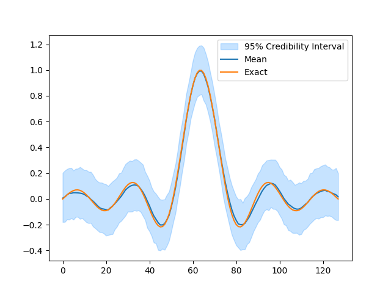
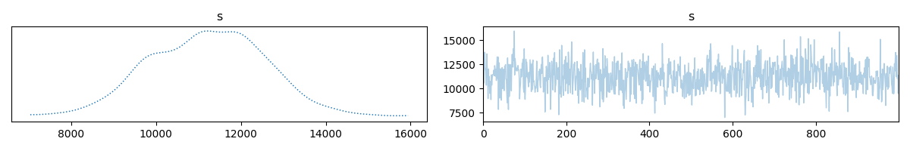
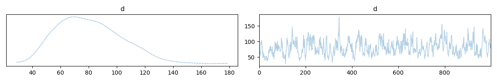
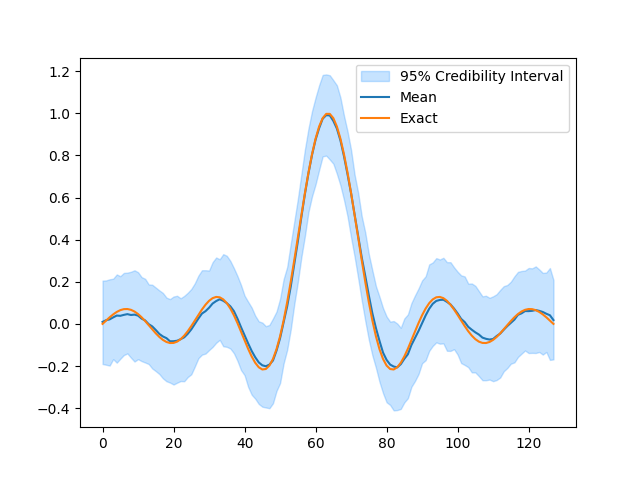

Note
Go to the end to download the full example code.
Random Variables and Algebra in CUQIpy#
CUQIpy provides a simple algebraic framework for defining and manipulating random variables.
In this example, we demonstrate how to define random variables, apply algebraic operations on them, and finally use them in Bayesian Problems.
Defining Random Variables#
# Random variables can be defined by either initialising the RandomVariable class
# with a distribution object or by retrieving the `rv` attribute of a distribution.
# The distribution object can be any distribution from the `cuqi.distribution` module.
from cuqi.distribution import Normal
from cuqi.algebra import RandomVariable
x = RandomVariable(Normal(0, 1))
y = Normal(0, 1).rv
Recording Algebraic Operations#
We can now perform some algebraic operations on the random variables. The operations are recorded in a computational graph, which can be evaluated later.
print("Basic operations: \n")
print(f"x + y yields:\n{x + y}\n")
print(f"x - y yields:\n{x - y}\n")
print(f"x * y yields:\n{x * y}\n")
print(f"x / y yields:\n{x / y}\n")
Basic operations:
x + y yields:
Transformed Random Variable
Expression: x + y
Components:
x ~ CUQI Normal.
y ~ CUQI Normal.
x - y yields:
Transformed Random Variable
Expression: x - y
Components:
x ~ CUQI Normal.
y ~ CUQI Normal.
x * y yields:
Transformed Random Variable
Expression: x * y
Components:
x ~ CUQI Normal.
y ~ CUQI Normal.
x / y yields:
Transformed Random Variable
Expression: x / y
Components:
x ~ CUQI Normal.
y ~ CUQI Normal.
print("Complex operations: \n")
print(f"x**2 + 2*x*y + y**2 yields:\n{x**2 + 2*x*y + y**2}\n")
print(f"(x + y)**2 yields\n{(x + y)**2}\n")
Complex operations:
x**2 + 2*x*y + y**2 yields:
Transformed Random Variable
Expression: x^2 + (x * 2) * y + y^2
Components:
x ~ CUQI Normal.
y ~ CUQI Normal.
(x + y)**2 yields
Transformed Random Variable
Expression: (x + y)^2
Components:
x ~ CUQI Normal.
y ~ CUQI Normal.
print("Array operations: \n")
print(f"x[0] + y[1] yields:\n{x[0] + y[1]}\n")
Array operations:
x[0] + y[1] yields:
Transformed Random Variable
Expression: x[0] + y[1]
Components:
x ~ CUQI Normal.
y ~ CUQI Normal.
Utilizing the recorded operations#
We can evaluate the recorded operations by calling the random variable object with the desired values for the random variables.
# Define a new random variable 'z'
z = (x + y)**2
# Evaluate the expression (using the __call__ method)
print(f"z={z.expression} evaluated at x=1, y=2 yields: {z(x=1, y=2)}")
z=(x + y)^2 evaluated at x=1, y=2 yields: 9
Building Bayesian Problems#
Random variables can be used to define Bayesian problems. In this example we build an example Bayesian problem using the Deconvolution1D test problem.
from cuqi.testproblem import Deconvolution1D
from cuqi.distribution import Gaussian, Gamma, GMRF
from cuqi.algebra import RandomVariable
from cuqi.problem import BayesianProblem
from cuqi.distribution import JointDistribution
from cuqi.sampler import HybridGibbs, LinearRTO, Conjugate, ConjugateApprox
import numpy as np
import matplotlib.pyplot as plt
# Forward model
A, y_obs, info = Deconvolution1D().get_components()
# Bayesian Problem (defined using Random Variables)
d = Gamma(1, 1e-4).rv
s = Gamma(1, 1e-4).rv
x = GMRF(np.zeros(A.domain_dim), d).rv
y = Gaussian(A @ x, 1/s).rv
# Combine into a Bayesian Problem and perform UQ
BP = BayesianProblem(y, x, s, d)
BP.set_data(y=y_obs)
BP.UQ(exact={"x": info.exactSolution})
# Random variables can also be used to define JointDistribution. Here we solve the same
# problem above by explictly forming a target distribution and then drawing samples with
# the HybridGibbs sampler.
target = JointDistribution(y, x, s, d)(y=y_obs)
# Sampling strategy
sampling_strategy = {
"x" : LinearRTO(),
"s" : Conjugate(),
"d" : Conjugate()
}
# Gibbs sampler
sampler = HybridGibbs(target, sampling_strategy)
# Run sampler
sampler.warmup(200)
sampler.sample(1000)
samples = sampler.get_samples()
# Plot
plt.figure()
samples["x"].plot_ci(exact=info.exactSolution)
- 
- 
- 
- 
Computing 1000 samples
!!!!!!!!!!!!!!!!!!!!!!!!!!!!!!!!!!!!!!!!!!!!!!!!!!!!!!!!!!
!!! Automatic sampler selection is a work-in-progress. !!!
!!! Always validate the computed results. !!!
!!!!!!!!!!!!!!!!!!!!!!!!!!!!!!!!!!!!!!!!!!!!!!!!!!!!!!!!!!
Using cuqi.sampler HybridGibbs sampler
burn-in: 20%
Automatically determined sampling strategy:
x: LinearRTO (mcmc.sampler)
s: Conjugate (mcmc.sampler)
d: Conjugate (mcmc.sampler)
Warmup: 0%| | 0/200 [00:00<?, ?it/s]
Warmup: 8%|▊ | 15/200 [00:00<00:01, 147.83it/s]
Warmup: 15%|█▌ | 30/200 [00:00<00:01, 147.46it/s]
Warmup: 22%|██▎ | 45/200 [00:00<00:01, 147.46it/s]
Warmup: 30%|███ | 60/200 [00:00<00:00, 147.34it/s]
Warmup: 38%|███▊ | 75/200 [00:00<00:00, 147.55it/s]
Warmup: 45%|████▌ | 90/200 [00:00<00:00, 147.71it/s]
Warmup: 52%|█████▎ | 105/200 [00:00<00:00, 147.77it/s]
Warmup: 60%|██████ | 120/200 [00:00<00:00, 147.77it/s]
Warmup: 68%|██████▊ | 135/200 [00:00<00:00, 147.90it/s]
Warmup: 75%|███████▌ | 150/200 [00:01<00:00, 147.95it/s]
Warmup: 82%|████████▎ | 165/200 [00:01<00:00, 148.02it/s]
Warmup: 90%|█████████ | 180/200 [00:01<00:00, 148.00it/s]
Warmup: 98%|█████████▊| 195/200 [00:01<00:00, 148.01it/s]
Warmup: 100%|██████████| 200/200 [00:01<00:00, 147.80it/s]
Sample: 0%| | 0/1000 [00:00<?, ?it/s]
Sample: 2%|▏ | 15/1000 [00:00<00:06, 148.30it/s]
Sample: 3%|▎ | 30/1000 [00:00<00:06, 148.21it/s]
Sample: 4%|▍ | 45/1000 [00:00<00:06, 147.88it/s]
Sample: 6%|▌ | 60/1000 [00:00<00:06, 148.05it/s]
Sample: 8%|▊ | 75/1000 [00:00<00:06, 147.95it/s]
Sample: 9%|▉ | 90/1000 [00:00<00:06, 148.15it/s]
Sample: 10%|█ | 105/1000 [00:00<00:06, 147.71it/s]
Sample: 12%|█▏ | 120/1000 [00:00<00:05, 147.76it/s]
Sample: 14%|█▎ | 135/1000 [00:00<00:05, 147.73it/s]
Sample: 15%|█▌ | 150/1000 [00:01<00:05, 147.42it/s]
Sample: 16%|█▋ | 165/1000 [00:01<00:05, 147.57it/s]
Sample: 18%|█▊ | 180/1000 [00:01<00:05, 147.67it/s]
Sample: 20%|█▉ | 195/1000 [00:01<00:05, 147.79it/s]
Sample: 21%|██ | 210/1000 [00:01<00:05, 147.86it/s]
Sample: 22%|██▎ | 225/1000 [00:01<00:05, 147.96it/s]
Sample: 24%|██▍ | 240/1000 [00:01<00:05, 148.02it/s]
Sample: 26%|██▌ | 255/1000 [00:01<00:05, 148.09it/s]
Sample: 27%|██▋ | 270/1000 [00:01<00:04, 148.00it/s]
Sample: 28%|██▊ | 285/1000 [00:01<00:04, 148.04it/s]
Sample: 30%|███ | 300/1000 [00:02<00:04, 148.01it/s]
Sample: 32%|███▏ | 315/1000 [00:02<00:04, 148.27it/s]
Sample: 33%|███▎ | 330/1000 [00:02<00:04, 148.25it/s]
Sample: 34%|███▍ | 345/1000 [00:02<00:04, 148.29it/s]
Sample: 36%|███▌ | 360/1000 [00:02<00:04, 148.30it/s]
Sample: 38%|███▊ | 375/1000 [00:02<00:04, 148.25it/s]
Sample: 39%|███▉ | 390/1000 [00:02<00:04, 148.27it/s]
Sample: 40%|████ | 405/1000 [00:02<00:04, 148.30it/s]
Sample: 42%|████▏ | 420/1000 [00:02<00:03, 148.26it/s]
Sample: 44%|████▎ | 435/1000 [00:02<00:03, 148.33it/s]
Sample: 45%|████▌ | 450/1000 [00:03<00:03, 148.33it/s]
Sample: 46%|████▋ | 465/1000 [00:03<00:03, 148.32it/s]
Sample: 48%|████▊ | 480/1000 [00:03<00:03, 148.21it/s]
Sample: 50%|████▉ | 495/1000 [00:03<00:03, 148.09it/s]
Sample: 51%|█████ | 510/1000 [00:03<00:03, 147.99it/s]
Sample: 52%|█████▎ | 525/1000 [00:03<00:03, 148.01it/s]
Sample: 54%|█████▍ | 540/1000 [00:03<00:03, 148.17it/s]
Sample: 56%|█████▌ | 555/1000 [00:03<00:03, 148.28it/s]
Sample: 57%|█████▋ | 570/1000 [00:03<00:02, 148.20it/s]
Sample: 58%|█████▊ | 585/1000 [00:03<00:02, 148.10it/s]
Sample: 60%|██████ | 600/1000 [00:04<00:02, 148.18it/s]
Sample: 62%|██████▏ | 615/1000 [00:04<00:02, 148.31it/s]
Sample: 63%|██████▎ | 630/1000 [00:04<00:02, 148.30it/s]
Sample: 64%|██████▍ | 645/1000 [00:04<00:02, 148.28it/s]
Sample: 66%|██████▌ | 660/1000 [00:04<00:02, 148.01it/s]
Sample: 68%|██████▊ | 675/1000 [00:04<00:02, 148.07it/s]
Sample: 69%|██████▉ | 690/1000 [00:04<00:02, 148.17it/s]
Sample: 70%|███████ | 705/1000 [00:04<00:01, 148.19it/s]
Sample: 72%|███████▏ | 720/1000 [00:04<00:01, 148.09it/s]
Sample: 74%|███████▎ | 735/1000 [00:04<00:01, 148.14it/s]
Sample: 75%|███████▌ | 750/1000 [00:05<00:01, 148.28it/s]
Sample: 76%|███████▋ | 765/1000 [00:05<00:01, 148.36it/s]
Sample: 78%|███████▊ | 780/1000 [00:05<00:01, 148.44it/s]
Sample: 80%|███████▉ | 795/1000 [00:05<00:01, 148.32it/s]
Sample: 81%|████████ | 810/1000 [00:05<00:01, 148.24it/s]
Sample: 82%|████████▎ | 825/1000 [00:05<00:01, 148.20it/s]
Sample: 84%|████████▍ | 840/1000 [00:05<00:01, 148.23it/s]
Sample: 86%|████████▌ | 855/1000 [00:05<00:00, 148.15it/s]
Sample: 87%|████████▋ | 870/1000 [00:05<00:00, 148.24it/s]
Sample: 88%|████████▊ | 885/1000 [00:05<00:00, 148.14it/s]
Sample: 90%|█████████ | 900/1000 [00:06<00:00, 147.90it/s]
Sample: 92%|█████████▏| 915/1000 [00:06<00:00, 148.12it/s]
Sample: 93%|█████████▎| 930/1000 [00:06<00:00, 148.12it/s]
Sample: 94%|█████████▍| 945/1000 [00:06<00:00, 148.26it/s]
Sample: 96%|█████████▌| 960/1000 [00:06<00:00, 148.18it/s]
Sample: 98%|█████████▊| 975/1000 [00:06<00:00, 148.28it/s]
Sample: 99%|█████████▉| 990/1000 [00:06<00:00, 148.39it/s]
Sample: 100%|██████████| 1000/1000 [00:06<00:00, 148.13it/s]
Elapsed time: 8.1125168800354
Plotting results
Warmup: 0%| | 0/200 [00:00<?, ?it/s]
Warmup: 8%|▊ | 15/200 [00:00<00:01, 147.52it/s]
Warmup: 15%|█▌ | 30/200 [00:00<00:01, 147.98it/s]
Warmup: 22%|██▎ | 45/200 [00:00<00:01, 148.21it/s]
Warmup: 30%|███ | 60/200 [00:00<00:00, 148.18it/s]
Warmup: 38%|███▊ | 75/200 [00:00<00:00, 148.12it/s]
Warmup: 45%|████▌ | 90/200 [00:00<00:00, 148.04it/s]
Warmup: 52%|█████▎ | 105/200 [00:00<00:00, 148.14it/s]
Warmup: 60%|██████ | 120/200 [00:00<00:00, 148.06it/s]
Warmup: 68%|██████▊ | 135/200 [00:00<00:00, 148.03it/s]
Warmup: 75%|███████▌ | 150/200 [00:01<00:00, 147.77it/s]
Warmup: 82%|████████▎ | 165/200 [00:01<00:00, 146.97it/s]
Warmup: 90%|█████████ | 180/200 [00:01<00:00, 147.33it/s]
Warmup: 98%|█████████▊| 195/200 [00:01<00:00, 147.65it/s]
Warmup: 100%|██████████| 200/200 [00:01<00:00, 147.78it/s]
Sample: 0%| | 0/1000 [00:00<?, ?it/s]
Sample: 2%|▏ | 15/1000 [00:00<00:06, 147.92it/s]
Sample: 3%|▎ | 30/1000 [00:00<00:06, 147.93it/s]
Sample: 4%|▍ | 45/1000 [00:00<00:06, 147.86it/s]
Sample: 6%|▌ | 60/1000 [00:00<00:06, 148.07it/s]
Sample: 8%|▊ | 75/1000 [00:00<00:06, 148.13it/s]
Sample: 9%|▉ | 90/1000 [00:00<00:06, 148.19it/s]
Sample: 10%|█ | 105/1000 [00:00<00:06, 148.23it/s]
Sample: 12%|█▏ | 120/1000 [00:00<00:05, 148.28it/s]
Sample: 14%|█▎ | 135/1000 [00:00<00:05, 148.37it/s]
Sample: 15%|█▌ | 150/1000 [00:01<00:05, 148.18it/s]
Sample: 16%|█▋ | 165/1000 [00:01<00:05, 148.17it/s]
Sample: 18%|█▊ | 180/1000 [00:01<00:05, 147.97it/s]
Sample: 20%|█▉ | 195/1000 [00:01<00:05, 148.01it/s]
Sample: 21%|██ | 210/1000 [00:01<00:05, 148.03it/s]
Sample: 22%|██▎ | 225/1000 [00:01<00:05, 148.08it/s]
Sample: 24%|██▍ | 240/1000 [00:01<00:05, 148.13it/s]
Sample: 26%|██▌ | 255/1000 [00:01<00:05, 148.24it/s]
Sample: 27%|██▋ | 270/1000 [00:01<00:04, 148.25it/s]
Sample: 28%|██▊ | 285/1000 [00:01<00:04, 148.28it/s]
Sample: 30%|███ | 300/1000 [00:02<00:04, 148.33it/s]
Sample: 32%|███▏ | 315/1000 [00:02<00:04, 148.45it/s]
Sample: 33%|███▎ | 330/1000 [00:02<00:04, 148.42it/s]
Sample: 34%|███▍ | 345/1000 [00:02<00:04, 148.43it/s]
Sample: 36%|███▌ | 360/1000 [00:02<00:04, 148.57it/s]
Sample: 38%|███▊ | 375/1000 [00:02<00:04, 148.47it/s]
Sample: 39%|███▉ | 390/1000 [00:02<00:04, 148.39it/s]
Sample: 40%|████ | 405/1000 [00:02<00:04, 148.09it/s]
Sample: 42%|████▏ | 420/1000 [00:02<00:03, 148.12it/s]
Sample: 44%|████▎ | 435/1000 [00:02<00:03, 148.05it/s]
Sample: 45%|████▌ | 450/1000 [00:03<00:03, 147.88it/s]
Sample: 46%|████▋ | 465/1000 [00:03<00:03, 147.94it/s]
Sample: 48%|████▊ | 480/1000 [00:03<00:03, 148.00it/s]
Sample: 50%|████▉ | 495/1000 [00:03<00:03, 148.23it/s]
Sample: 51%|█████ | 510/1000 [00:03<00:03, 148.24it/s]
Sample: 52%|█████▎ | 525/1000 [00:03<00:03, 148.28it/s]
Sample: 54%|█████▍ | 540/1000 [00:03<00:03, 148.20it/s]
Sample: 56%|█████▌ | 555/1000 [00:03<00:03, 148.25it/s]
Sample: 57%|█████▋ | 570/1000 [00:03<00:02, 148.26it/s]
Sample: 58%|█████▊ | 585/1000 [00:03<00:02, 148.36it/s]
Sample: 60%|██████ | 600/1000 [00:04<00:02, 148.37it/s]
Sample: 62%|██████▏ | 615/1000 [00:04<00:02, 148.29it/s]
Sample: 63%|██████▎ | 630/1000 [00:04<00:02, 148.26it/s]
Sample: 64%|██████▍ | 645/1000 [00:04<00:02, 148.23it/s]
Sample: 66%|██████▌ | 660/1000 [00:04<00:02, 148.34it/s]
Sample: 68%|██████▊ | 675/1000 [00:04<00:02, 148.09it/s]
Sample: 69%|██████▉ | 690/1000 [00:04<00:02, 148.13it/s]
Sample: 70%|███████ | 705/1000 [00:04<00:01, 148.15it/s]
Sample: 72%|███████▏ | 720/1000 [00:04<00:01, 148.17it/s]
Sample: 74%|███████▎ | 735/1000 [00:04<00:01, 148.23it/s]
Sample: 75%|███████▌ | 750/1000 [00:05<00:01, 148.32it/s]
Sample: 76%|███████▋ | 765/1000 [00:05<00:01, 148.29it/s]
Sample: 78%|███████▊ | 780/1000 [00:05<00:01, 147.87it/s]
Sample: 80%|███████▉ | 795/1000 [00:05<00:01, 148.07it/s]
Sample: 81%|████████ | 810/1000 [00:05<00:01, 148.24it/s]
Sample: 82%|████████▎ | 825/1000 [00:05<00:01, 148.26it/s]
Sample: 84%|████████▍ | 840/1000 [00:05<00:01, 148.42it/s]
Sample: 86%|████████▌ | 855/1000 [00:05<00:00, 148.32it/s]
Sample: 87%|████████▋ | 870/1000 [00:05<00:00, 148.38it/s]
Sample: 88%|████████▊ | 885/1000 [00:05<00:00, 148.54it/s]
Sample: 90%|█████████ | 900/1000 [00:06<00:00, 148.49it/s]
Sample: 92%|█████████▏| 915/1000 [00:06<00:00, 148.48it/s]
Sample: 93%|█████████▎| 930/1000 [00:06<00:00, 148.37it/s]
Sample: 94%|█████████▍| 945/1000 [00:06<00:00, 148.46it/s]
Sample: 96%|█████████▌| 960/1000 [00:06<00:00, 148.56it/s]
Sample: 98%|█████████▊| 975/1000 [00:06<00:00, 148.54it/s]
Sample: 99%|█████████▉| 990/1000 [00:06<00:00, 148.43it/s]
Sample: 100%|██████████| 1000/1000 [00:06<00:00, 148.25it/s]
[<matplotlib.lines.Line2D object at 0x7fa8afdbaa20>, <matplotlib.lines.Line2D object at 0x7fa8afdb9010>, <matplotlib.collections.FillBetweenPolyCollection object at 0x7fa8aff06e70>]
Conditioning on random variables (example 1)
s = Gaussian(0, 1).rv
x = Gaussian(0, s).rv
y = Gaussian(0, lambda d: d).rv
z = x+y
z.condition(s=1)
z.condition(d=2)
Transformed Random Variable
Expression: x + y
Components:
x ~ CUQI Gaussian. Conditioning variables ['s'].
y ~ CUQI Gaussian.
Or conditioning on the variables s, or d
z.condition(s=1)
Transformed Random Variable
Expression: x + y
Components:
x ~ CUQI Gaussian.
y ~ CUQI Gaussian. Conditioning variables ['d'].
Conditioning on random variables (example 2)
from cuqi.testproblem import Deconvolution1D
from cuqi.distribution import Gaussian, Gamma, GMRF
from cuqi.algebra import RandomVariable
from cuqi.problem import BayesianProblem
import numpy as np
# Forward model
A, y_obs, info = Deconvolution1D(dim=4).get_components()
# Bayesian Problem (defined using Random Variables)
d = Gamma(1, 1e-4).rv
s = Gamma(1, 1e-4).rv
x = GMRF(np.zeros(A.domain_dim), d).rv
y = Gaussian(A @ x, 1/s).rv
z = x+y
z.condition(x=np.zeros(A.domain_dim))
Transformed Random Variable
Expression: [0. 0. 0. 0.] + y
Components:
y ~ CUQI Gaussian. Conditioning variables ['s'].
Sampling from random variables#
Random variables can be sampled using the sample method. The method returns a sample from the distribution of the random variable.
x = RandomVariable(Normal(0, 1))
print(f"Sample from x: {x.sample()}")
Sample from x: 1.5313150719729232
This can be combined with algebraic operations to sample from more complex random variables.
z = x + x**2 + 25
print(f"Sample from z: {z.sample()}")
Sample from z: 25.609017298194665
Constructing a Beta distribution using Gamma random variables#
Random variables can also be combined to create new distributions. This is primarily useful for sampling at this stage. For example, a Beta distribution can be constructed from two Gamma distributions: If X ~ Gamma(a1, 1) and Y ~ Gamma(a2, 1), then Z = X / (X + Y) ~ Beta(a1, a2). We illustrate this by comparing samples from a Beta distribution to samples constructed using two Gamma distributions.
from cuqi.distribution import Beta, Gamma
# Define the shape parameters of the Beta distribution
a1, a2 = 3, 2
# Step 1: Directly define a Beta distribution
z_ref = RandomVariable(Beta(a1, a2))
# Step 2: Construct the Beta distribution using Gamma random variables
x = RandomVariable(Gamma(a1, 1)) # X ~ Gamma(a1, 1)
y = RandomVariable(Gamma(a2, 1)) # Y ~ Gamma(a2, 1)
z = x / (x + y) # Z ~ Beta(a1, a2)
# Step 3: Sample from both distributions
z_samples = z.sample(10000) # Samples from constructed Beta distribution
z_ref_samples = z_ref.sample(10000) # Samples from direct Beta distribution
# Step 4: Plot histograms of the samples for comparison
z_samples.hist_chain([0], bins=100)
z_ref_samples.hist_chain([0], bins=100)
<BarContainer object of 100 artists>
Total running time of the script: (0 minutes 17.916 seconds)